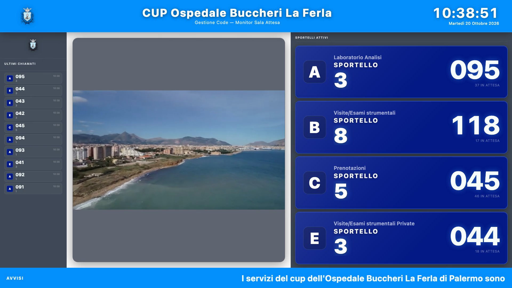
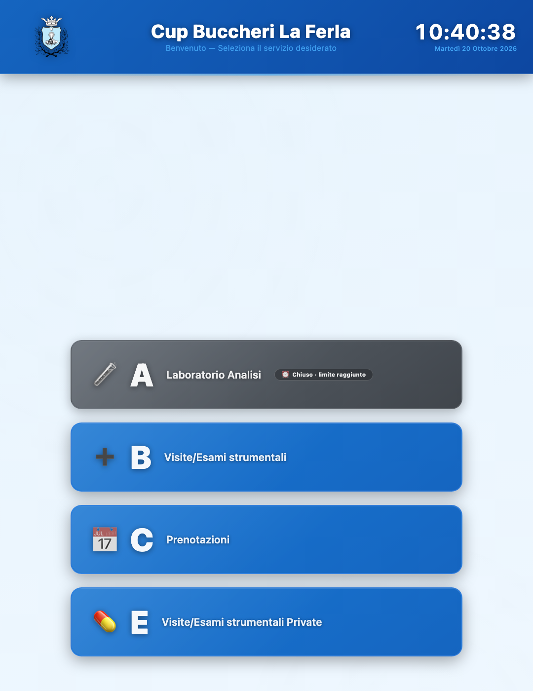
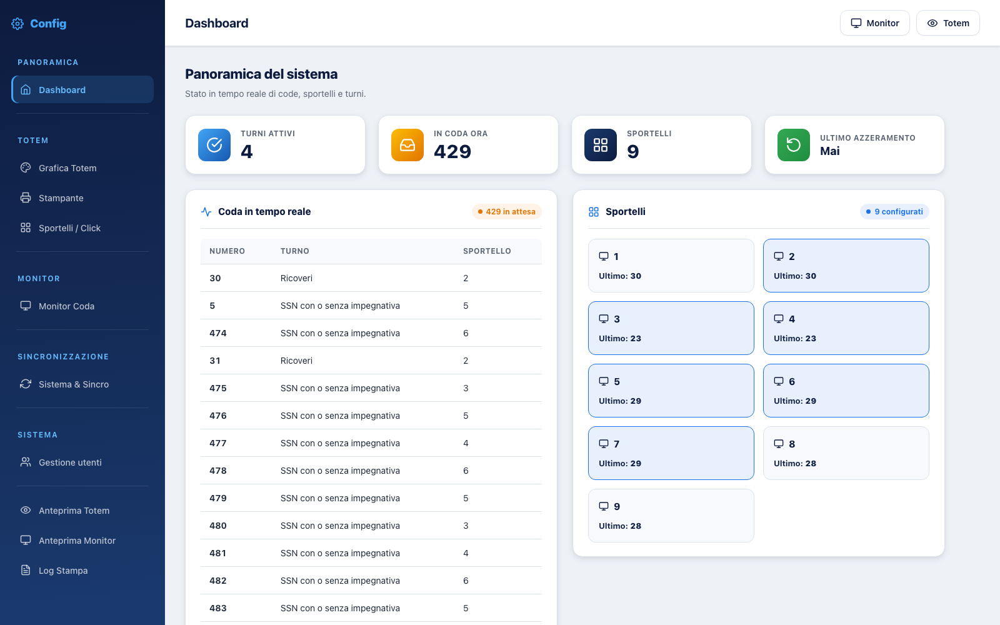
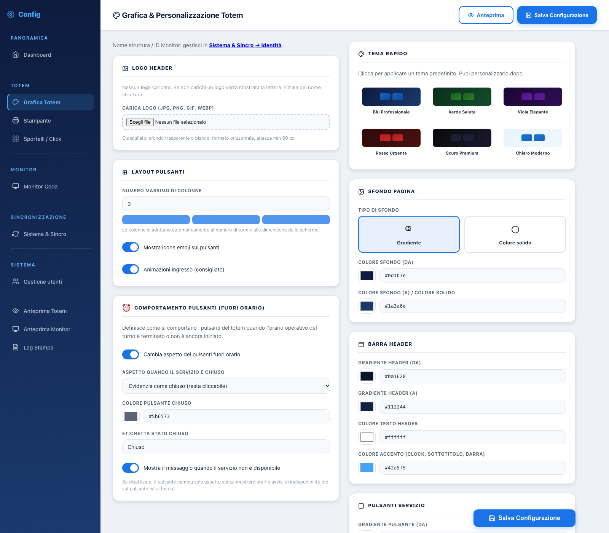

Il paziente prende il numero
Dal totem touch sceglie il servizio; il biglietto viene stampato con numero, sportello e orario.
Un sistema completo per ambulatori, poliambulatori e sportelli: il paziente prende il numero, il monitor annuncia il turno con voce naturale, l’operatore chiama e gestisce la coda da browser. Tutto in rete locale, senza servizi esterni.
Numero, attesa, chiamata, sportello: ogni passaggio è tracciato e visibile al responsabile.
Il flusso è lo stesso in ogni sede: cambiano solo i servizi e la grafica, che si configurano dal pannello.
Dal totem touch sceglie il servizio; il biglietto viene stampato con numero, sportello e orario.
Il monitor mostra i turni chiamati e gli sportelli attivi, con annuncio vocale e contenuti multimediali.
Dalla postazione web chiama il prossimo, richiama o trasferisce la pratica a un altro sportello.
La dashboard mostra code, sportelli e ultimi azzeramenti; il log stampa registra ogni anomalia.
Nessun modulo da acquistare a parte: totem, monitor, sportello e amministrazione sono parte dello stesso prodotto.
Logo, colori, sfondo, numero di colonne e disposizione dei servizi. Anteprima live mentre si modifica, senza toccare il codice.
Voci neurali per annunciare numero e sportello, con velocità regolabile e sintesi locale come riserva.
Turni chiamati, sportelli attivi, avvisi scorrevoli, immagini e video di struttura: layout configurabile.
Chiamata del prossimo numero, richiamo, trasferimento tra sportelli e storico delle chiamate, da qualsiasi browser.
Profili stampante, stampa diretta e agente locale sul PC del totem: i biglietti escono anche senza server Windows.
Verifica versione da GitHub, backup automatico e applicazione con un clic dal pannello Sistema & Sincro.

Numero e sportello in grande, colonna dei richiami sempre visibile, fascia per gli avvisi e spazio per immagini o video istituzionali. La grafica si adatta alla TV o al monitor già installati.

Il totem mostra solo i servizi attivi in quel momento. Fuori orario i pulsanti si possono evidenziare, disabilitare o nascondere, con un messaggio dedicato.
Accesso da localhost senza password, da rete locale con credenziali e permessi per singola sezione. Ogni utente vede solo ciò che gli serve.



Nessun abbonamento, nessun dato che esce dalla struttura: il sistema gira sul tuo server Linux e nella tua rete.
MyEliminaCode Sanitario è pensato per la rete locale. L’esposizione su Internet è possibile solo con HTTPS e regole di accesso configurate a cura dell’amministratore di rete.
Consulta la documentazione tecnica per l’installazione, o la guida operatore da consegnare agli sportelli.